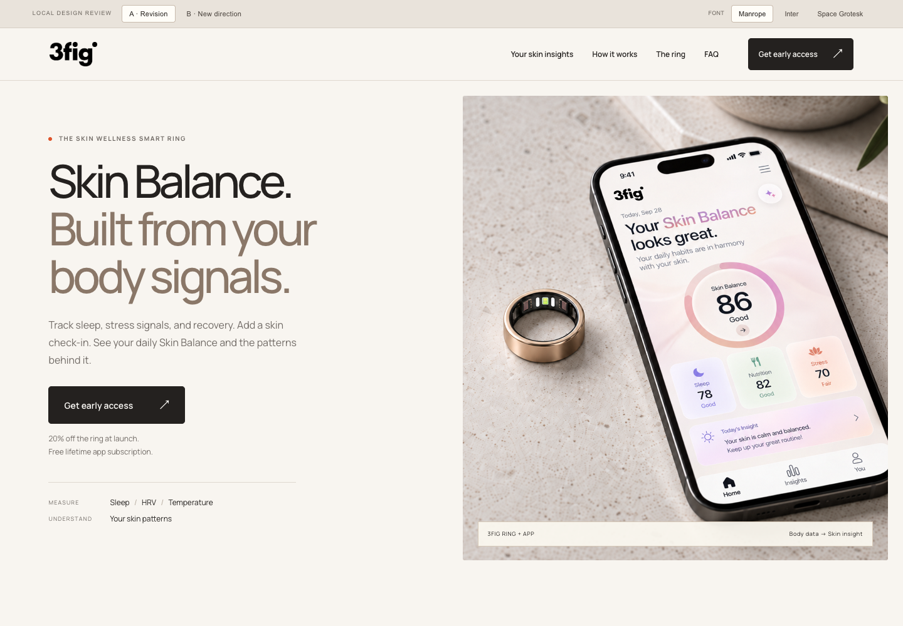
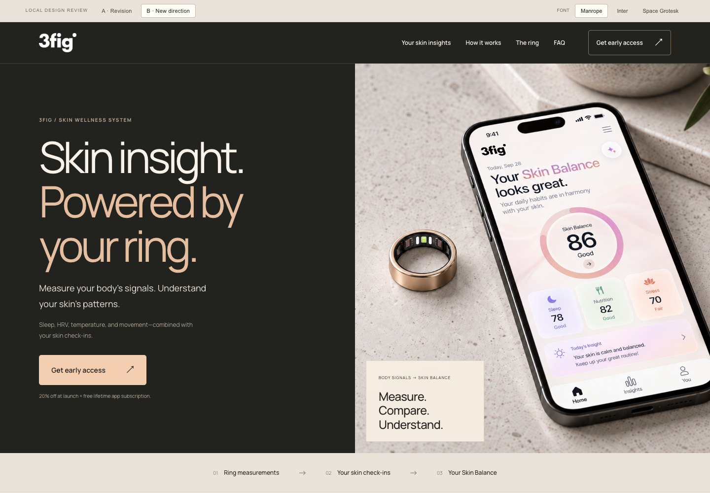

A / REVISION
기존 구성 수정안
teaser3의 흐름을 유지하며 피부 톤, 간결한 문구와 선명한 앱 분석 화면으로 정리했습니다.
수정안 보기 ↗현재 teaser3를 다듬은 수정안과 새로운 디자인을 비교해 주세요. 각 시안 상단에서 Manrope · Inter · Space Grotesk 폰트를 전환할 수 있습니다.

teaser3의 흐름을 유지하며 피부 톤, 간결한 문구와 선명한 앱 분석 화면으로 정리했습니다.
수정안 보기 ↗
차콜 히어로와 측정·분석 구조를 중심으로 Skin Balance를 강조한 새 구성입니다.
새 디자인 보기 ↗링 이미지와 폰트는 두 버전에서 동일한 자산을 사용합니다.